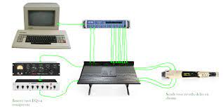

1. Hoe beeld en geluid worden opgeslagen:
Beeld: Beeld wordt vaak opgeslagen als een reeks pixels, waarbij elke pixel een kleurwaarde heeft. Er zijn verschillende formaten voor het opslaan van beeld, zoals JPEG, PNG en GIF. JPEG-compressie gebruikt verliesgevende compressie, wat betekent dat sommige gegevens verloren gaan om bestandsgrootte te verminderen, terwijl PNG en GIF lossless compressie gebruiken om de bestandsgrootte te verkleinen zonder kwaliteitsverlies.
Geluid: Geluid wordt opgeslagen als een reeks samples die de amplitude van het geluid op verschillende tijdstippen vertegenwoordigen. Dit wordt gedaan met behulp van audiocodecs, zoals MP3 voor verliesgevende compressie of FLAC voor lossless compressie. Verliesgevende compressie verwijdert sommige geluidsinformatie om de bestandsgrootte te verminderen, terwijl lossless compressie de oorspronkelijke kwaliteit behoudt.
2. Verschillen tussen een bitmap en vectorafbeeldingen:
Bitmapafbeeldingen: Bitmaps (ook wel rasterafbeeldingen genoemd) worden opgebouwd uit een raster van pixels. Elke pixel heeft een specifieke kleurwaarde, waardoor bitmapafbeeldingen geschikt zijn voor foto's en complexe afbeeldingen. Ze kunnen echter pixelatie ervaren bij het schalen naar een grotere resolutie.
Vectorafbeeldingen: Vectorafbeeldingen worden gemaakt met behulp van wiskundige formules om lijnen, curves en vormen te definiëren. Ze worden opgeslagen als een reeks instructies en zijn ideaal voor logo's, pictogrammen en illustraties. Vectorafbeeldingen behouden hun scherpte en kwaliteit, ongeacht de grootte waarin ze worden weergegeven.
3. Sampling en sample rate:
Sampling: Sampling is het proces waarbij een continue analoge signaal, zoals geluid, wordt omgezet in discrete stappen (samples). Dit is nodig om digitale representaties van geluid te creëren. De nauwkeurigheid van het samplingproces beïnvloedt de geluidskwaliteit.
Sample Rate: De sample rate is het aantal samples dat per seconde wordt genomen bij het digitaliseren van geluid. Het wordt gemeten in Hertz (Hz). Hogere sample rates resulteren in nauwkeurigere geluidsweergave, maar vereisen ook meer opslagruimte. De CD-kwaliteit heeft bijvoorbeeld een sample rate van 44,1 kHz
4. Tekstcompressie:
Tekstcompressie is het proces waarbij de omvang van tekstbestanden wordt verminderd zonder de essentiële informatie te verliezen. Dit kan worden bereikt door herhalingen en patronen in de tekst te identificeren en te vervangen door kortere representaties. Populaire tekstcompressie-algoritmen omvatten ZIP en gzip voor lossless compressie, en algoritmen zoals Lempel-Ziv-Welch (LZW) voor lossy compressie.
Lees meer over de compressietechnieken pagina.
1.7 